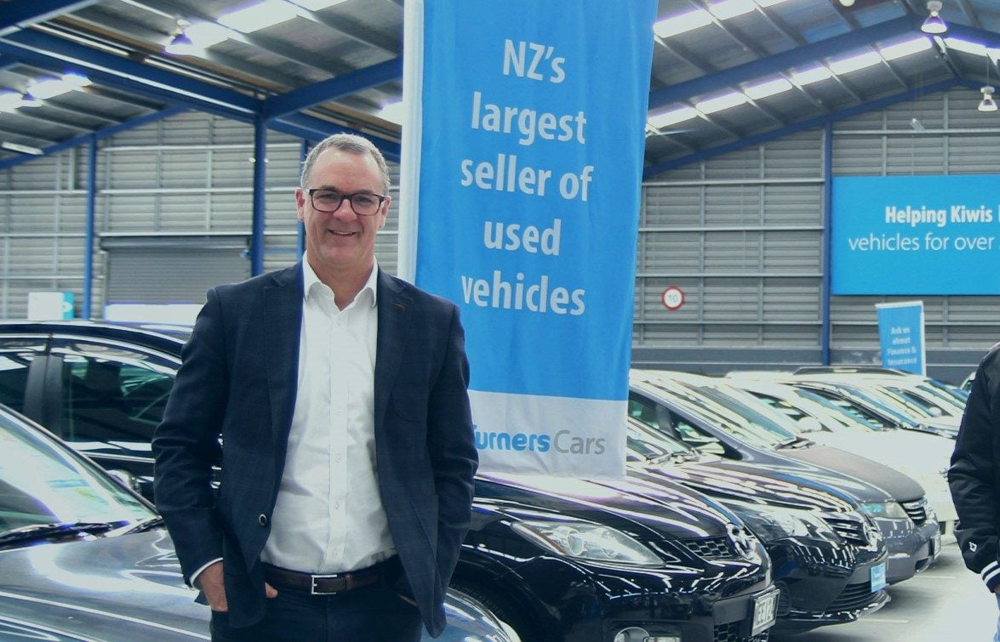
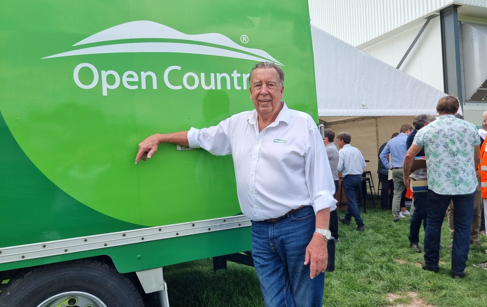

Tim Alpe
Managing Director, LyLo
Auckland · Est. 2020 · By invitation only
One speaker. One evening. No recording.
The Long Table is a private, under-the-radar dinner for an invited group of New Zealand's most curious business owners, leaders and professionals. A few times a year, we gather around one insightful guest — and hold a conversation worth remembering.
Format
No panels. No microphones. No name tags. Just twenty or so business owners, leaders, and professionals, a single guest, and the kind of long, unhurried conversation that doesn't happen at conferences.
No slides. No moderator running a clock. The evening is structured to let a genuine conversation develop — between the guest and a room full of people who've seen things.

The audience
The Long Table brings together twenty business owners, leaders, and professionals drawn from across New Zealand's economy. Our members span medicine, insurance, professional services, consulting, manufacturing, the military, transport and logistics, technology, retail, financial management, tourism, brewing, and recruitment — a deliberately diverse cross-section united by curiosity, seniority, and a genuine appetite for honest conversation and challenge. There are no observers at this table. Everyone is here to engage.
The next dinner

Past guests
A small sample of the business owners, leaders and professionals who've joined us over the past few years.
Managing Director, LyLo

Chief Executive, Foodstuffs North Island

Group CEO & Executive Director, Turners Automotive Group

Company Director, Advisor & Author, The Best Leaders Don't Shout

Chief Executive, Port of Auckland

Chief Commissioner, Victoria Police; Former Commissioner, New Zealand Police

Professional Director; Chairman, Open Country Dairy

Chief Executive, Infrastructure New Zealand
The venue
A quiet back room at one of Auckland's most loved Italian restaurants. The food is unfussy and excellent — the kitchen knows us, the wine list is deep, and the room was built for the kind of evening we throw.
Drinks from 6:30pm. Seated by 7:00pm.
259 Parnell Road

RSVP
Seats are limited to twenty and we curate the room carefully. Your ticket covers a three-course dinner.
The Long Table · 13 August
Non Solo Pizza, Parnell · Drinks 6:30pm
Secure checkout via Stripe. You can cancel up to 7 days before the dinner for a full refund.